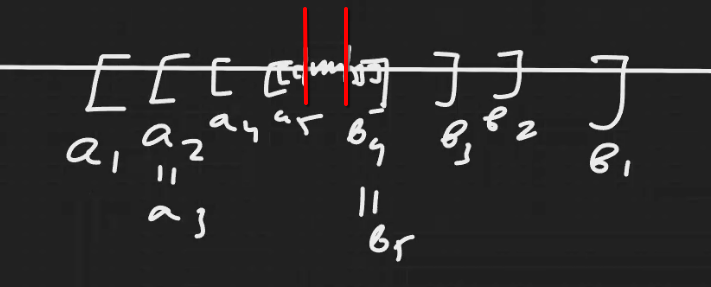
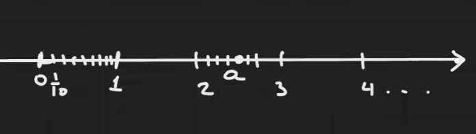

Table of Contents
Аксиома Архимеда theorem
\(\forall a \in \mathbb{R} \wedge a > 0\;\; \exists n \in \mathbb{N} : n\cdot a \geqslant 1\)
Аксиомы множества действительных чисел.
Вложенные отрезки
Определение отрезка и системы вложенных отрезков.
Стягивающаяся последовательность вложенных отрезков.

Лемма о вложенных отрезках lemma
Утверждения
1 . Пусть есть система вложенных отрезков \(\{I_{n}\}\), тогда \(\exists C \in \mathbb{R}: c \in I_{n} \forall n \in \mathbb{N}\) (то есть у них есть общие точки).
- Если система вложенных отрезков стягивающаяся, то такая точка \(C\) – единственная.
Доказательствa
- Доказать от противоречия, что любой левый конец левее правого конца. А значит по принципу полноты, есть \(C\) разделяющее левые и правые концы.
- Пусть такая точка не одна. Тогда будет отрезок между этими точками, меньше которого отрезки последовательности быть не могут, а значит и последовательность не может быть стягивающейся.
Построение вещественной прямой
В случае с вещественными числами получаем систему стягивающихся отрезков.

- Отразим все точки относительно нуля и получим вещественную ось.
Как разбить отрезок на \(n\) равных частей? По теореме Фалеса.
Некоторые подмножества оси
- Интервал
- Полуинтервал
- Луч (Открытый)
- Луч (Замкнутый)
Окрестность
- Окрестность точки \(x \in \mathbb{R}\) – любой интервал, содержащий \(x\).
- \(\varepsilon\) -окрестность в точке \(x \in \mathbb{R}\) – это интервал вида \((x-\varepsilon, x+\varepsilon)\;\;(\varepsilon > 0)\)
- Проколотая \(\varepsilon\) -окрестность
Функции definition
Пусть \(X\) и \(Y\) – непустые множества, тогда декартовым произведением этих множеств называют называют множество всех упорядоченных пар. Причём первый элемент пары всегда принадлежит \(X\), а второй \(Y\).
Функцией \(f\), определённой на множестве \(X\) и отображающей \(X\) в \(Y\) называется подмножество декартова произведения \(X \times Y : \forall x \in X \exists ! y \in Y : (x, y)\) принадлежит этому подмножетву (оно обычно тоже обозначается \(f\)).
Последовательность
Последовательность – это \(f \colon \mathbb{N} \rightarrow \mathbb{R}\)